食用菌
食用蘑菇种类大全(图) 常见食用菌的主要营养成分表
1、白黄侧耳

又称美味侧耳、紫孢侧耳。
子实体中等大至较大。菌盖直径5-13cm，初期扁半球形，伸展后基部下凹，光滑，幼时铅灰色，后渐呈灰白至近白色，有时稍带浅褐色，边缘薄，平滑，幼时内卷，后期常呈波状。菌肉白色，稍厚。菌褶宽，稍密，延生而在柄上交织，白色至近白色。柄短，扁生或侧生，内实，光滑，长2-5cm，粗0.6-2.5cm，往往基部相连。
春秋季节生于阔叶树干上，近覆瓦状丛生。
分布在河北、黑龙江、吉林、山东、江苏、四川、安徽、江西、河南、广西、新疆、云南等地区。
白黄侧耳是一种人工大量栽培的食用菌。在市场上花几元钱就可以买到一斤，味道鲜美，炒菜做汤都可，而且可治有抑制肿痛的作用，有试验表明对小白鼠肉瘤的抑制率为60-80%，对艾氏癌的抑制率为60-70%。
2、深凹杯伞
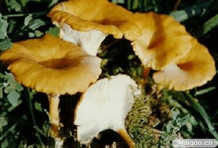
子实体较小。菌盖直径5-8cm，扁半球形至扁平，后中部下凹呈漏斗状，表面干，光亮，浅土红至浅粉褐色。菌褶延生，密，污白色，不等长；菌柄细长，圆柱形，长4-8cm，粗0.4-1cm；菌盖色浅，内部松软。
夏秋季在阔叶林中地上生长。
分布在我国云南、四川等地区。
可食用。
3、玉米黑粉菌
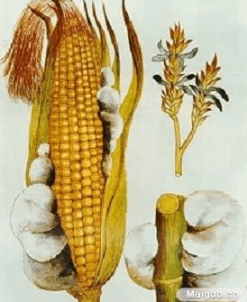
又称玉蜀黍黑粉菌、玉米黑霉。
孢子堆的小大、形状不定，多呈瘤状，长或直径3-15cm，初期外面有一层白色膜，往往由寄生组织形成，有时还带黄绿色或紫红色彩，后渐变灰白至灰色，破裂后散出大量黑色粉末，即冬孢子。
寄生在玉米抽穗和形成玉米棒期间，玉米各部位均可生长。冬孢子在土壤、粪肥、病株残体等处越冬，次年经空气传播到玉米株上发生黑粉病。此菌分布很广泛，是玉米的主要的病害之一。
分布于我国河北、山西、黑龙江、辽宁、吉林、内蒙古、安徽、江苏、浙江、江西、福建、河南、广东、宁夏等地区。
幼嫩时，可以食用，也可生食，有甜味，炒食别有风味。经常食用可预防和治疗肝脏系统和胃肠道溃疡，并能助消化和通便。玉米黑粉菌的培养液中含有谷氨酸、赖氨酸、丙氨酸、精氨酸、蛋氨酸、苏氨酸、组氨酸等16种氨基酸。将新鲜的孢子堆摘下或将老熟后的孢子粉收集后炼成蜜丸做药用，其药性特寒、味甘，有益肝胃和解毒作用。用孢子粉拌红糖可治神经衰弱和小儿疳积。
该菌还产生黑粉菌酸，可用作香料工业中的原料；有抗菌作用，其菌液对小白鼠肉瘤有抑制作用。另外，此菌还可用于生产能刺激高等植物生长的生长激素吲哚乙酸。
4、羊肚菌
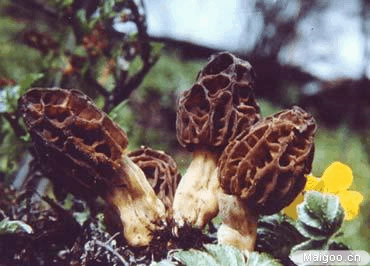
又称羊肚菜、美味羊肚菌。
子实体较小或中等，6-14.5cm，菌盖不规则圆形，长圆形，长4-6cm，宽4-6cm。表面形成许多凹坑，似羊肚状，淡黄褐色，柄白色，长5-7cm，宽粗2-2.5cm，有浅纵沟，基部稍膨大，生长于阔叶林地上及路旁，单生或群生。
分布于我国陕西、甘肃、青海、西藏、新疆、四川、山西、吉林、江苏、云南、河北、
北京等地区。
可食用，味道鲜美，是一种优良食用菌。可药用，益肠胃，化痰理气。含有异亮氨酸、亮氨酸、赖氨酸、蛋氨酸、苯丙氨酸、苏氨酸和缬氨酸等7种人体必需氨基酸。可利用发酵罐培养菌丝体。
5、紫褐羊肚菌
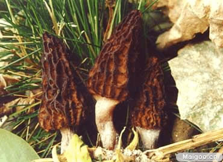
子囊果小至中等。菌盖呈圆锥形或近圆柱形，高4-7cm，宽2-4cm，顶部多钝圆或稍尖，由比较明显的纵棱纹交织成网格状，并形成许多近长方形或近多角形的凹窝，浅茶褐色、茶褐带紫色，往往棱纹色较深。菌柄白色、黄白色或带浅黄褐色，近圆柱形或近棒状，长3-5cm，粗0.7-2(3)cm，空心，中部以上平滑或有白色粉末状细颗粒被覆，基部稍膨大，有纵沟槽，空心。
春夏季生山林地上，多在杂灌木林地上散生或单生，偶有群生。
分布于我国甘肃、四川等地区。
可食用，是一种味道很好的食用菌。
6、黑马鞍菌
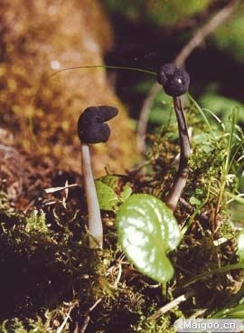
子囊果小，黑灰色。菌盖直径l-2cm，呈马鞍形或不正规马鞍形，边缘完整，与柄分离，上表面，即子实层面黑色至黑灰色，平整；下表面灰色或暗灰色，平滑，无明显粉粒。菌柄圆柱形或侧扁，稍弯曲，黑色或黑灰色，往往较盖色浅，长2.5-4cm，粗0.3-0.4cm，表面有粉粒，基部色淡，内部实心。子囊圆柱形，长0.2-0.3mm，含孢子8枚，单行排列。
夏秋季在林中地上散生或群生。
分布于我国河北、云南、四川、湖南、山西、甘肃、新疆等地区。
有将其列为食用菌的记载。
7、皱柄白马鞍菌

又称皱马鞍菌。
子实体较小。菌盖初始马鞍形，后张开呈不规则瓣片状，2-4cm ，白色到淡黄色。子实层生菌盖表面。柄白色，圆柱形，有纵生深槽，形成纵棱，长5cm，粗2cm。
在林中地上单生或群生。
分布于我国河北、山西、黑龙江、江苏、浙江、西藏、陕西、甘肃、青海、四川等地区。
可食用，味道好。
8、大白口蘑

又称洛巴口蘑、大口蘑。
子实体中等至大型，白色。菌盖直径8-23（32）cm，厚，初期半球形或扁半球形，边缘内卷，后期扁平至稍平展，中央微下凹，表面平滑或偶有小突起，白色，污白至浅奶油色。成熟后颜色变暗，边缘波状或部分卷曲。菌肉白色，致密，微具淀粉味。菌褶直生或弯生，污白至象牙白色，密至稍密，初期窄后变宽。菌柄幼时粗壮明显，膨大似瓶，伸长后长8-28（45）cm，粗1.5-4.6 cm，基部往往连合成一大丛。表面有细线条纹，同盖色，实心。
夏秋季在凤凰木等树桩基部附近及沃土上丛生。
分布在我国台湾、广东、香港、海南等地。
可食用，味道比较好，台湾等地已经进行了试验栽培。
9、泡质盘菌
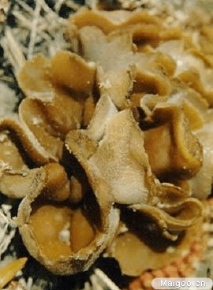
又称粪碗。
子实体中等大小，有时可达14cm。初期近球形，逐渐伸展呈杯状，无菌柄。子实层表面近白色，逐渐变成淡棕色，外部白色，有粉状物。菌内白色，质脆，厚达3-5mm。
夏秋季生于空旷处的肥土及粪堆上，往往成群生长在一起。
分布于我国河北、河南、江苏、云南、台湾、四川、西藏等地区。
可食用，但需慎重处理，不可多食。
10、松口蘑
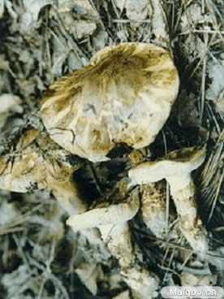
又称松磨、松茸、鸡丝菌（西藏）。
子实体中等至较大。菌盖直径5-10cm，扁半球形至近平展，污白色，具黄褐色至栗褐色平伏的丝毛状鳞片，表面干燥。菌肉白色，厚。菌褶白色或稍带乳黄色，密，弯生，不等长。菌柄较粗状，长8-13.5cm，粗2-2.6cm，菌环以上污白色并有粉粒，菌环以下具栗褐色纤毛状鳞片，内实，基部有时稍膨大。菌环生在菌柄的上部，丝膜状，上面白色，下面与菌柄同色。
秋季在松林或针阔混交林中地上群生或散生，或形成蘑菇圈。往往和松树形成菌根关系。
分布在我国黑龙江、吉林、安徽、台湾、四川、山西 、贵州、云南、西藏等地区。
此种菌菌肉肥厚，香气浓郁，味道鲜美，是一种名贵的野生食用菌。在西藏地区群众将此菌火烤后蘸盐吃，味道也很好，此菌在日本视为菇中之珍品，经济价值很高。由于生态习性特殊，目前人工栽培子实体未能成功，处于半人工栽培状态。
据化学分析，该菌蛋白质，脂肪，各种人体必须的氨基酸都很丰富，还含有丰富的维生素B1、B2、C及PP。松口蘑具有强身，益肠胃，止痛，理气化痰之医药功效。子实体热水提取物对小白鼠肉瘤180的抑制率为91.8%，对艾氏癌的抑制率为70%。
该菌又是树木的外生菌根菌。已知与赤松，黑松，高山松形成菌根。目前松口蘑在大量采集和外销的情况下，需要采取有力措施，加强对我国野生松口蘑资源的进一步调查研究，对此珍贵资源及生态环境着力保护，同时需要加强对松口蘑人工栽培的研究。
11、蒙古口蘑
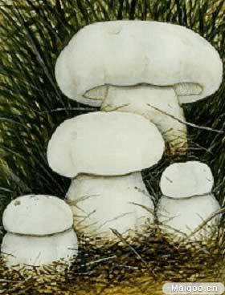
又称白蘑、白蘑菇、蒙古口蘑（内蒙古）。
子实体白色。菌盖宽5-17cm，半球形至平层。白色，光滑，初期边缘内卷。菌肉白色，厚。菌褶白色，稠密，弯生，不等长。菌柄粗壮，白色，长3.5-7cm，粗1.5-4.6cm，内实，基部稍大。
夏秋季在草原上群生并形成蘑菇圈。
分布于我国河北、内蒙古、黑龙江、吉林、辽宁等地区。
此种菌的菌肉肥厚，质地细致，郁香醇正，味独特鲜美。是我国北方草原盛产的“口蘑”之最上品，传统畅销于国内外市场。根据子实体大小、产地不同等特点，分有许多商品名称，如幼小未开伞的称“珍珠蘑”，开伞后的称“片蘑”等。还可供药用，性平，味甘。能宣肠益气，散热，解表。治小儿麻疹欲出不出，烦燥不安，可用幼小晒干的“蘑菇钉”9克，水浸软后切碎，水煎服，一次服完，日服二次。有抗癌活性。此种蘑菇目前还未驯化栽培成功，可能它与某些草本植物有共生关系，也可能与土壤微生物区系及其形成的营养化学成分有关。现阶段这种资源越来越少，生态环境受到不同程度的破坏。保护资源的生态环境和研究人工驯化技术是重要的任务。
12、黄白蚁伞
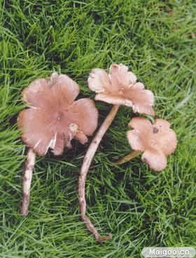
此菌又称黄鸡纵。
子实体中等至较大。菌盖直径5-10cm或更大，幼时圆锥形、钟形或斗笠形，后期近平展，中部明显突起，表面土黄色，顶部色深，边缘波状或开裂。菌肉纯白色至污白色。菌褶白色，离生，稍稀，不等长。菌柄细长，圆柱形，光滑，白色，基部稍粗而向下延伸连接蚁巢，内部实心，纤维质。
夏秋季长在白蚁巢上，群生。
分布于云南等地。
可食用，味鲜美。
13、鸡纵菌
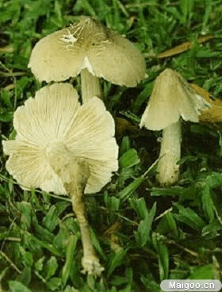
又称伞把菇（四川）、鸡肉丝菇（台湾、福建）、豆鸡菇、白蚁菰（福建、广东）
子实体中等至大型。菌盖宽3-23.5cm，幼时圆锥形至钟形并逐渐伸展，顶部显著凸起呈斗笠形，灰褐色或褐色至浅土黄色，长老后辐射状开裂，有时边缘翻起。菌肉白色，较厚。菌褶白色至乳白色，长老后带黄色，弯生或近离生，稠密，窄，不等长，边缘波状。菌柄较粗壮，长3-15cm，粗0.7-2.4cm，白色或同菌盖色，内实，基部膨大具有褐色至黑褐色的细长假根，长可达40cm。
夏秋季在山地、草坡、田野或林沿地上单生或群生，其假根与地下黑翅土白蚁（Odontotermes formosanus）窝相连。
分布在我国江苏、福建、台湾、广东、广西、海南、四川、贵州、云南、西藏、浙江等地区。
鸡纵菌肉细嫩，香味浓郁，味道鲜美，我国人民采食该菌的历史悠久，属著名的野生食用蘑菇之一，畅销于国内外市场，群众根据该菌的颜色和形态等特点，分为黑皮、白皮、黄皮、花皮等许多类型，但是否同属一个种还需要进一步研究。味道以黑皮（青皮）者最好。据李时珍《本草纲目》记载，该菌具有“益胃、清神、治痔”等药用功效。
14、蜜环菌
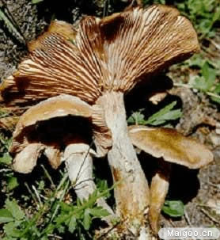
子实体一般中等大。菌盖直径4-14cm，淡土黄色、蜂蜜色至浅黄褐色。老后棕褐色，中部有平伏或直立的小鳞片，有时近光滑，边缘具条纹。菌肉白色。菌褶白色或稍带肉粉色，直生至延生，稍稀，老后常出现暗褐色斑点。菌柄细长，圆柱形，稍弯曲，长5-13cm ，粗0.6-1.8cm，同菌盖色，有纵纹和毛状小鳞片，纤维质，内部松软变至空心，基部稍膨大。菌环白色，生柄的上部，幼时常呈双层，松软，后期带奶油色。
夏秋季在很多种针叶或阔叶树树干基部、根部或倒木上丛生。
可食用，干后气味芳香，但略带苦味，食前须经处理，在针叶林中产量大。
15、黄绿蜜环菌
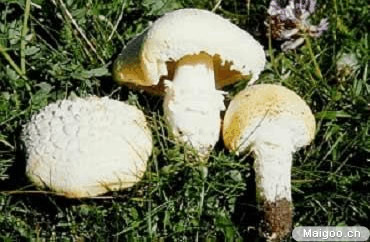
又称黄环菌。
子实体中等大。菌盖厚，肉质，宽5-9cm，扁半球形至平展，硫黄色，干后近白色，具
纤毛状鳞片，边缘内卷 。菌肉白色，厚。菌褶近似菌盖色，稍密，弯生，不等长。菌柄柱形，长3.5-10cm，粗1.2-2.5cm，白色或带黄色，内实，菌环以下具黄色鳞片，基部往往膨大。菌环生柄的上部，黄色。
夏秋季生于草原或高山地上。在西藏珠穆朗玛峰地区，其分布可达海拔5000m高处的山草甸。
分布于我国河北、陕西、甘肃、青海、四川、西藏等地区。
可食用，味鲜美，是高山草地上的一种质地优良的食用菌。在青海和西藏产区居民广泛采食。在甘肃甘南草原区亦有分布，可收集加工销售。
16、金顶侧耳
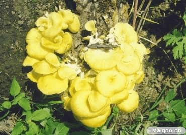
又称榆黄蘑、金顶蘑。
子实体一般中等大。菌盖草黄色至鲜黄色，光滑，漏斗形，边缘内卷，直径3-10cm。菌肉白色，菌褶白色，密，延生，不等长。菌柄偏生，白色，内实，长2-10cm，粗0.5-1.5cm，往往基部相连。秋季丛生在榆树、栎树等阔叶树倒木上。
分布在河北、黑龙江、吉林、广东、香港和西藏等地。
可以食用，味道较好，现已人工栽培。可引起有关树木的木质腐朽。还可供药用，有滋补强壮的功能，用于治疗肾虚阳痿和痢疾。
17、褐寓褶伞
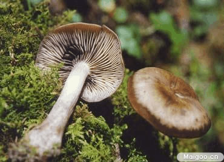
子实体丛生一起，菌盖较小，直径1-5cm,半球形、扁半球形至平展，边缘稍翻起，初期灰褐或暗灰褐色，渐变灰褐到浅灰褐色，表面近平滑。菌肉白色或污白色。菌褶直生或弯生至稍延生，不等长，密，白至污白色。菌柄近圆柱形，弯曲，长3-9cm，粗0.5-0.6cm。
秋季生林中地上，多生于阔叶林或混交林地上，可与树木形成菌根。
分布于河北、甘肃、青海、黑龙江等地。
可食用，味道较好。
18、暗褐寓褶伞
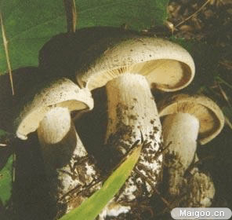
子实体一般较小或中等，菌盖直径3-12cm，初期扁半球形、后期近扁平，中部稍凸起，表面光滑或平滑，或有似放射状细绒毛，暗灰褐色，或带黑褐色，老时出现暗褐斑点。菌肉中央厚，边缘薄，污白色，具香味。菌褶不等长，直生至近弯生，幼时污白色，后期灰色至带褐色，伤处色变暗。菌柄长5-18cm，粗0.5-1.5cm，近柱形或基部稍膨大，表面污白色至灰白色，上部粉末状，内部实心至松软，弯曲。
夏末至秋季生于阔叶林或针阔混交林地上，单生或丛生。
分布于青海等地。
可食用。
19、香杏丽菇
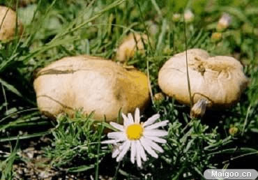
又称虎皮香杏、黄皮口蘑、香杏蘑。
子实体一般中等大。菌盖直径6-12cm，半球形至平展，光滑，不粘，带白色或淡土黄色至淡土红色，边缘内卷。菌肉白色，肥厚。菌褶白色，或稍带黄色，稠密，窄，弯生，不等长。菌柄长3.5-10cm，粗1.5-3.5cm，白色，或稍带黄色，具条纹，内实。
夏秋季在草原上群生、丛生或形成蘑菇圈。国外多记载生于林中。
分布于我国河北、甘肃、内蒙古、吉林、黑龙江等地区。
此种蘑菇菌肉肥厚、具香味、味道鲜美，是著名的“口蘑”中之一种，深受广大人民群众欢迎，其商品名有香杏、香杏片等。还可用于治疗小儿麻疹。进行过人工栽培试验。
20、硬柄小皮伞
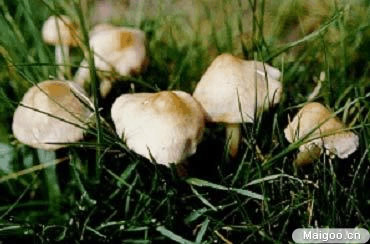
又称硬柄皮伞、仙环上皮伞。
子实体较小。菌盖宽3-5cm，扁平球形至平展，中部平或稍凸，浅肉色至深土黄色，光滑，边缘平滑或湿时稍显出条纹。菌肉近白色，薄。菌褶白色，宽，稀，离生，不等长。菌柄圆柱形，长4-6cm，粗0.2-0.4cm，光滑，内实。
夏秋季在草地上群生并形成蘑菇圈，有时生林中地上。
分布于我国河北、山西、青海、四川、西藏、湖南、内蒙古、福建、贵州、安徽等地区，它是著名的形成蘑菇圈（仙人环）的种类，由此而流传着许多关于蘑菇圈形成的美妙神话故事。
此种蘑菇有香气，味鲜，口感好。可药用，治腰腿疼痛、手足麻木、筋络不适。
21、粉紫香菇
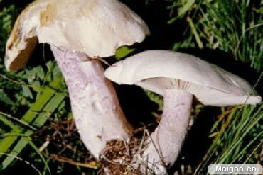
实体中等至大型。菌盖直径5-10（20）cm，半球形至近平展，藕粉色或淡紫粉色，较快褪色至带污白色或蛋壳色，幼时边缘具絮状物。菌肉白色带紫色，具明显的淀粉气味。
菌褶淡粉紫色，密，弯生，不等长。菌柄柱形，长4-7cm，有时达15cm，粗0.5-3cm，菌柄紫色或淡青紫色，具纵条纹，上部色淡，具白色絮状鳞片，内实至松软，基部稍膨大。
夏秋季在林中地上群生或生长成一条带或近似蘑菇圈。
分布于我国黑龙江、内蒙古、甘肃、青海、新疆等地区。
此种菌肉厚，具香气，味鲜美，很好吃，是一种优良食用菌。另外据记载，它与云杉、松、栎等树木形成外生菌根。
22、紫丁香蘑
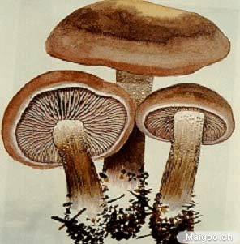
又称裸口蘑、紫晶蘑。
子实体一般中等大。菌盖直径3.5-10cm，半球形至平展，有时中部下凹，亮紫色或丁香紫色变至褐紫色，光滑，湿润，边缘内卷，无条纹。菌肉淡紫色，较厚。菌褶紫色，密，直生至稍延生，不等长，往生边缘呈小锯齿状。菌柄长4-9cm，粗0.5-2cm，圆柱形，同菌盖色，初期上部有絮状粉末，下部光滑或具纵条纹，内实，基部稍膨大。
秋季在林中地上群生，有时近丛生或单生。
分布于我国黑龙江、福建、青海、新疆、西藏、山西等地区。
可食用，菌肉厚，具香气，味鲜美，是优良食用菌。可栽培，国外试验在腐殖质上栽培效果好。用此菌试验抗癌效果表明，对小白鼠肉瘤180的抑制为90%，对艾氏癌的抑制率为100%。
该蘑菇会有维生素 B1，能调节机体糖代谢，促进神经传导。经常食用有预防脚气病的作用。另外，有与松、榛、山杨形成外生菌根的记载。
23、金针菇
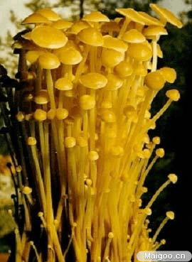
子实体一般较小，菌盖直径1-5cm，幼时扁平球形，后渐平展，黄褐色，中部肉桂色，边缘乳黄色并有细条文，湿润时粘滑。菌肉白色，较薄，褐白色，乳白色或微带肉粉色，弯生，稍密，不等长。菌柄长3-7cm粗0.2-7cm，黄褐色，短绒毛，纤维质，内部松软，基部延伸似假根紧紧靠在一起。
早春和晚秋至初冬，在阔叶林腐木桩上丛生。
分部在我国各省区。
可食用，味鲜，可人工栽培。可药用，预防和治疗肝脏系统疾病及胃肠道溃疡，可抗癌，对小白鼠肉瘤180的抑制率达81.1%，对艾氏癌的抑制率为80%。此菌可使树木木质形成黄白色腐朽，在树皮和木质部的间隙中出现根状菌索。
24、粉褶侧耳

又称粉红褶侧耳。
子实体小至中等大。菌盖扇形或近扇形，带粉红色，后褪为白色，直径2-10cm，表面光滑，干燥，柄很短或几乎没有，有柄时长约3cm，粗2.5cm，白色带粉红，实心，菌肉白色、柔软，菌褶稍密，延生，粉红色，不等长。
夏秋季成丛生长在阔叶树腐木上。
分布在海南、福建、广东和吉林等地区。
可食用，能人工栽培，属高温型栽培种。据记载，此种蘑菇在高温时为粉红色，而在低温时可呈现白色，是木材腐朽菌。
25、裂皮白环蘑
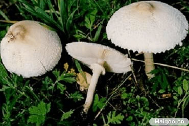
子实体较大，菌盖4-11cm，初期近球形，后期近平展，白色，中部往往褐色，表面幼时光滑，后期龟裂。菌肉白色。菌褶白色，离生，密，不等长。菌柄长4-12cm，粗1-1.2cm，基部大，圆柱形，白色，中空，菌环白色，腊质，生柄上部，后与柄分离，可上下活动。
夏秋季在草原或林中空地上群生。
分部于我国新疆、云南、西藏、内蒙古。
可以食用。
26、双孢蘑菇
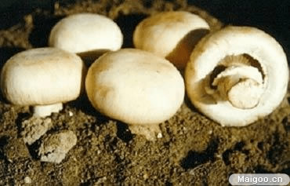
又称洋蘑菇、二孢蘑菇。
子实体中等大，菌盖宽5-12cm，初半球形，后平展，白色，光滑，略干渐变黄色，边缘初期内卷。菌肉白色，厚，伤后略变淡红色，具蘑菇特有的气味。菌褶初粉红色，后变褐色至黑褐色，密，窄，离生，不等长，菌柄长4.5-9cm，粗1.5-3.5cm，白色，光滑，具丝光，近圆柱形，内部松软或中实，菌环单层，白色，膜质，生菌柄中部，易脱落。生林地、草地、田野、公园、道旁等处。
分布极广泛，国内普遍栽培。
可食用，味道鲜美，我国大批制做罐头行销国内外。该蘑菇蛋白质含量高达42%（干重），氨基酸的种类十分丰富，核苷酸和维生素也很丰富，有5'-腺苷酸、5'-鸟苷酸、5'-尿苷酸及维生素B1、B2叶酸和维生素D原等。
尚可药用及工业用。其中含多量酪氨酸酶，对降低血压十分有效。还可以制成肺炎辅助治疗剂——健肝片。有的国家还发现含有抗癌物质和抗细菌的广谱抗菌素。
近年来由于深层培养的研究成功，人们还可利用蘑菇菌丝体生产蛋白质、草酸和菌糖等物质。
27、蘑菇

又称雷窝子（黑龙江）、四孢蘑菇。
子实体中等至稍大，菌盖宽3-13cm，初扁半球形，后的平展，有时中部下凹，白色至乳白色，光滑或后期具丛毛状鳞片，干燥时边缘开裂。菌肉白色，厚。菌褶初粉红色，后变褐色至黑褐色，较密，离生，不等长。菌柄较短，粗，圆柱形，有时稍弯曲，和1-9cm，粗0.5-2cm，近光滑或略有纤毛，白色，中实。菌环单层，白色，膜质，生菌柱中部，易脱落。
春到秋季在草地、路旁、田野、堆肥场、林间空地等处单生及群生。
分布于我国河北、黑龙江、吉林、江苏、台湾、西藏、陕西、甘肃、山西、新疆、四川、云南及内蒙古等地区。
可食用，能人工栽培和深层发酵培养菌丝体，是优良食用菌。含有维生素C、B1、PP等 ，经常食用可预防脚气病，身体疲倦、食欲不振，消化不良以及妇女在哺乳期间乳汁分泌减少，还可以预防毛细血管破裂，牙床及腹腔出血，皮肤糙皮病及各种贫血病症等。该蘑菇可产生野菇菌素，对金黄色葡萄球菌、伤寒杆菌和大肠杆菌有抑制作用，还可以降低血糖。
28、雀斑蘑菇
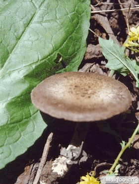
又称雀斑菇、小蘑菇。
子实体小或中等大。菌盖直径2-8cm，初期扁半球形，后平展，白色，具浅棕灰色至浅灰褐色纤毛状鳞片，中部色深，老时边缘开裂。菌肉污白色，伤处不变色。菌褶初期污白色，后渐变粉色、紫褐至黑褐色，稠密，离生，不等长。菌柄长2-6cm，粗0.7-1cm，圆柱形而向上渐细，基部有时膨大。菌环单层，白色，膜质，生柄之上部，易脱落。
秋季生草地或林中草地上，单生或群生。
分布于河北、江苏、海南、广西等地。
可食用。
29、白林地蘑菇
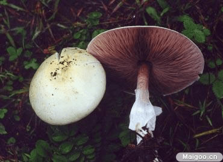
子实体中等至稍大。菌盖直径6.5-11cm，初期扁半球形，后平展，白色或淡黄色，有时中部浅褐色，覆有平伏的丝状纤毛，边缘常开裂。菌肉白色，稍厚。菌褶初期白色，渐变粉红色、褐色、黑褐色，密，离生，不等长。菌柄长7-15cm，粗0.6-1.5cm，污白色，松软到中空，近圆柱形，基部稍膨大，伤后变黄色，尤其基部更明显。菌环单层，白色，膜质，生菌柄上部，上表面平滑，下面棉绒状，大，易脱落。褶缘囊体近洋梨形。
夏秋季生于林中地上，单生或散生。
分布于河北、山西、黑龙江、吉林、辽宁、台湾、甘肃、青海、四川、云南等地。
可食用。菌肉厚，味道较好，但也有怀疑有毒的记载，食用时应注意。
30、麻脸蘑菇
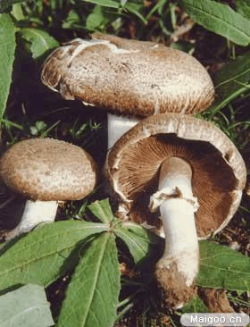
子实体大或较大。菌盖直径10-15cm，初球形、扁半球形，后平展，淡黄色，具平伏的褐色细鳞片，形似麻点。菌肉白色，厚。菌褶近白色，渐变为粉红色到黑褐色，密，离生，不等长。菌柄长6-8cm，粗1.5- 2.5cm，白色，具淡黄色细鳞片，内部松软到实心，基部稍膨大，向上渐细。菌环单层，白色，膜质，较大而厚，生菌柄中部至上部，不易脱落。
春至秋季于草原上，单生到群生。
分布于新疆、吉林、西藏、山西、内蒙古、甘肃、四川、青海等地。
可食用。味道较好。
31、皱环球盖菇
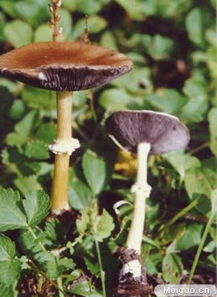
子实体中等至较大。菌盖扁半球形至扁平，直径 5-15cm，湿润时稍粘，褐色至灰褐色或锈褐色，平滑或有纤毛状鳞片，干时表面有光泽，盖边缘初期内卷且附着菌幕残片。菌肉白色，稍厚。菌褶初期污白，渐变灰紫至暗褐紫色，直生，密，较宽，不等长。菌柄近圆柱形，靠近基部稍膨大，长5-12cm，粗0.5-2cm，菌环以上污白，近光滑，菌环以下带黄色细条纹，内部松软至变空心。菌环生中上部，膜质，较厚，窄，双层似齿轮状，白色或带黄色，上面具粗糙条纹，易脱落．往往上面落有孢子呈紫褐色。
夏秋季生长在林中或林缘草地上。
分布于台湾、香港、四川、陕西、甘肃、云南、吉林、西藏等地。
可食用，国外亦有栽培。国内已引种栽培。抗癌试验表明，对小白鼠肉瘤180的抑制率为70%，对艾氏癌的抑制率为70%。
32、草菇
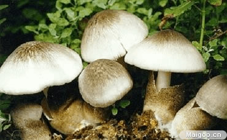
子实体较大，菌盖直径5-19cm，近钟形，后伸展，中部稍凸起，干燥，灰色至灰褐色。中部色深，具辐射的纤毛状线条。菌肉白色，松软，中部梢厚。菌褶白色，后粉红色梢密，宽，离生，不等长。菌柄圆柱形，长5-18cm，粗0.8-1.5cm，白色或带黄色，光滑，内实。菌托较大，杯状，厚，白色至灰黑色。
秋季在草堆上群生。我国南方多用稻草进行人工栽培。
分布于我国河北、福建、台湾、湖南、广西、四川、西藏等地。
可食用，肉脆嫩，味鲜美。可药用，其性寒、味甘，能消食去热，增进身体健康。
33、血红铆钉菇
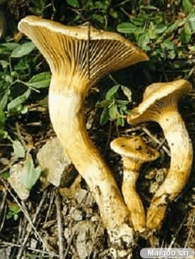
子实体一般较小,菌盖宽3-8cm，初期钟形或近圆锥形，后平展，中部凸起，浅咖啡色，光滑，湿时粘，干时有光泽。菌肉带红色，干后淡紫红色，近菌柄基部带黄色。菌褶延生，稀，青黄色变至紫褐色，不等长。菌柄长6-10(18)cm，粗1.5-2.5cm，圆柱形且向下渐细，稍粘，与菌盖色相近且基部带黄色，实心，上部往往有易消失的菌环。
夏秋季在松林地上单生或群生，并且形成菌根。
分布于我国河北、山西、吉林、黑龙江、辽宁、云南、西藏、广东、湖南、四川等地区。
此种蘑菇肉厚，食用味道较好。是华北地区重要的野生食用菌之一。药用可治神经性皮炎。该菌是针叶树木重要的外生菌根菌，在北方与赤松形成菌根，大量生长。
34、香菇
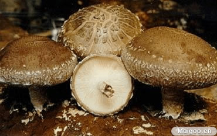
又称香蕈、椎耳、香信、冬菰、厚菇、花菇。子实体较小至稍大，菌盖直径5-12cm，可达20cm，扁平球形至稍平展,表面菱色、浅褐色、深褐色至深肉桂色，有深色鳞片，而边缘往往鳞片色浅至污白色，有毛状物或絮状物，菌肉白色，稍厚或厚，细密，菌褶白色，密、弯生、不等长。菌柄中生至偏生，白色，常弯曲，长3-8cm，粗0.5-1.5cm，菌环以下有纤毛状鳞片，内实，纤维质，菌环易消失，白色。
冬春季，有些地区夏秋季生长在阔叶树倒木上，在人工栽培中，按发生季节有春生型、夏生型、秋生型、冬生型和春秋生等类型，在段木上单生或群生。
分布在我国浙江、福建、台湾、安徽、湖南、湖北、江西、四川、广东、广西、海南、贵州、云南、陕西、甘肃等地区。
香菇是我国传统的著名食有菌，在世界上最早人工驯化栽培。香菇营养丰富，味道鲜美，被视为“菇中之王”。其中含有十多种氨基酸，其中有异亮氨酸、赖氨酸、苯丙氨酸、蛋氨酸、苏氨酸、缬氨酸等7种人体必需的氨基酸，还含有维生素B1、B2、PP及矿物盐。
香菇中含不饱和脂肪酸甚高，还含有大量的可转变为维生素D的麦角甾醇和菌甾醇，对于增强抗疾病和预防感冒及治序有良好效果。经常食用对预防人体，特别是婴儿因缺乏维生素D而引起的血磷、血钙代谢障碍导致的佝偻病有益，可预防人体各种粘膜及皮肤炎病。香菇中所含香菇太生（lentysin）可预防血管硬化，可降低人的血压，从香菇中还分离出降血清胆固醇的成分（C8H1104N5，C9H1103N5）。香菇灰分中含有大量钾盐及其它矿质元素，被视为防止酸性食物中毒的理想食品。香菇中的碳水化合物中以半纤维素居多，主要成分是甘露醇、海藻糖和菌糖（mycose），葡萄糖、戊聚糖、甲基戊聚糖等。
我国不少古籍中记载香菇“益气不饥，治风破血和益胃助食”。民间用来助痘疮、麻疹的诱发，治头痛、头晕。现代研究证明，香菇多糖可调节人休内有免疫功能的T细胞活性，可降低甲基胆蒽诱发肿瘤的能力。香菇对癌细胞有强烈的抑制作用，对小白鼠肉瘤180的抑制率为97.5%，对艾氏癌的抑制率为80%。香菇还含有双链核糖核酸，能诱导产生干扰素，具有抗病毒能力。
香菇含有水溶性鲜味物质，可用作食品调味品，其主要成分是5'-乌苷酸等核酸成分。香味成分主要是香菇酸分解生成的香菇精（lentionione）。所以香菇是人们重要的食用、药用菌和调味品。
35、松乳菇
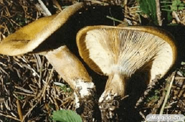
子实体中等至大型，菌盖直径4-10(15)cm,扁半球形，中央粘状，伸展后下凹，边缘最初内卷，后平展，湿时粘，无毛，虾仁色，胡萝卜黄色或深橙色，有或没有颜色较明显的环带，后色变淡，伤后变绿色，特别是菌盖边缘部分变绿显著。菌肉初带白色，后变胡萝卜黄色。乳汁量少，桔红色，最后变绿色，菌褶与菌盖同色，稍密，近柄处分叉，褶间具横脉，直生或稍延生，伤后或老后变绿色。菌柄 长2-5cm，粗0.7-2cm，近圆柱形并向基部渐细，有时具暗橙色凹窝，色同菌褶或更浅，伤后变绿色，内部松软后变中空，菌柄切面先变橙红色，后变暗红色。
夏秋季在阔叶林中地上单生或群生，形成菌根。
分布于我国浙江、香港、台湾、海南、河南、河北、山西、吉林、辽宁、江苏、安徽、江西、甘肃、青海、四川、云南 、新疆、西藏等地区。
可食用。味道柔和，后味稍辛辣，味好。往往产量大，便于收集、加工、销售。子实体含橡胶物质。此菌是外生菌根菌，可与松衫、铁衫、冷衫、高山松马尾形成菌根。
36、黄斑红菇
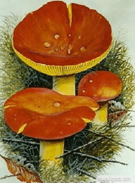
子实体中等大。菌盖宽5-8cm，扁半球形，后平展至中部稍下凹，桔红至桔黄色，中部往往较深或带黄色，老后边缘有条纹或条纹不明显。菌肉白色，近表皮处桔红或黄色。味道柔和或微辛辣，气味好闻。菌褶淡黄色，等长，有时不等长。直生至几乎离生，稍密，褶间具横脉，近柄处往往分叉。菌柄长3.5-7cm，粗1-1.8cm，圆柱形，淡黄色或白色或部分黄色，肉质，内部松软后变中空。
夏球季在混交林中地上单生或群生。
分布于我国黑龙江、吉林、安徽、河南、甘肃、陕西、四川、贵州等地区。
可食有用，味较好。西南地区群众广泛采食。此菌有抑癌作用。对小白鼠瘤180的抑制率为70%，对艾氏癌的抑制率80%。
37、光亮红菇
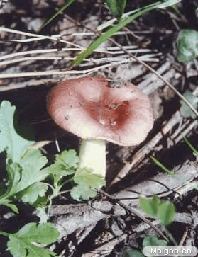
子实体小。菌盖直径26cm，初期扁半球形，后期中部下凹或近平展，表面湿润而光亮，色彩较多变，浅紫褐色，灰紫褐色，酒紫褐色或带红紫褐色，往往色彩不均，或中部色彩深，边缘平直有细条棱及老后形裂。菌肉白色，质脆，稍麻。菌褶直生至离生，一般等长，有时靠近柄部分叉，乳黄色或稍深。菌柄近棒状柱形，白色或部分带玫瑰红色，表面近平滑，质脆，内部松软，褶侧囊体柱状或近棒状。
夏秋季在阔叶林中地上单生或群生。
分布于四川、云南等地。
可食用。属外生菌根菌。
38、绿菇
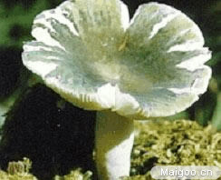
又称变绿红菇、青盖子、青菌（东北）、青面梨菇（福建）、青蛙菌、绿豆菌（广西）、青脸菌（四川）、青头菌（昆明）、青汤菌（贵州）等。
子实体中等至稍大。菌盖直径3-12cm，初球形，很快变扁半球形并渐伸展，中部常稍下凹，不粘，浅绿色至灰绿色，表皮往往斑状龟裂，老时边缘有条纹。菌肉白色。无特殊气味。菌褶白色，较密，等长，近直生或离生，具横脉。菌柄长2-9.5cm，粗0.8-3.5cm，中实或内部松软。
夏秋季在林中地上单生或群生。
分布于我国黑龙江、吉林、辽宁、江苏、福建、河南、甘肃、陕西、广西、西藏、四川、云南、贵州等地区。
可食用，味鲜美。但不可多食，以姜为使。据云南卫生防疫站分析，每百克含蛋白质2.84克， 硫胺素0.043毫克，磷7.8毫克，钙135毫克，铁4.3毫克，灰份0.95克，水分90克。
可药用。据记载，有主治眼目不明，克泻肝经之火，散热舒气之功效。另外，对小白鼠瘤180和艾氏癌的抑制率均为80-70%。
此菌是树木的外生菌根菌。与栎、桦、栲、栗形成菌根。
39、美味牛肝菌
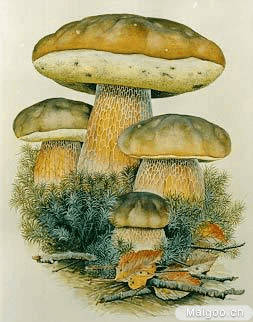
又称大脚菇、白牛肝菌。
子实体中等至大型。菌盖直径4-15cm，扁半球形或稍平展，不粘，光滑，边缘纯，黄褐色、土褐色或赤褐色。菌肉白色，厚，受伤后不变色。菌管初期白色，后呈淡色，直生或近孪生，或在柄之周围凹陷。管口圆形，每毫米2-3个。柄长5-12cm，粗2-3cm近圆柱形或基部稍膨大，淡褐色或淡黄褐色，内实，全部有网纹或网纹占柄长的三分之二。
夏秋季在林中地上单生或散生。
分布于我国河南、台湾、黑龙江、四川、贵州、云南、西藏、内蒙古、福建等地区。
可食用，是优良野生食用菌。其菌肉厚而细软、味道鲜美。含有人体必需的8种氨基酸，还含有腺膘呤、胆碱和腐胺等生物碱。可药用，治疗腰腿疼痛、手足麻木、四肢抽搐，还可用以治妇女白带症。该菌子实体的水提取物有肽类或蛋白质，对小白鼠肉瘤180的抑制率为100%，对艾氏癌的抑制率为90%。可与冷杉、铁杉、桦、鹅耳枥、山毛榉、白腊树、栎、悬铃木、山杨、榆、高山松、云南松等树木形成菌根。
目前不能人工栽培子实体，但可利用菌丝进行深层发酵培养。
40、褐枝瑚菌
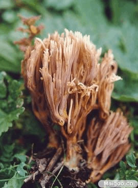
子实体中等大，高4-10cm，淡锈色、锈褐色至肉桂色。柄长2-4cm，粗1cm左右，多分枝，直立,多次叉状分枝，小枝顶端齿状分叉。
夏秋季在针阔叶林中地上单生或群生。
分布于吉林、云南、西藏等地。在西藏林区分布广，产量较大。
可食用，味鲜美可口。
41、环柄香菇
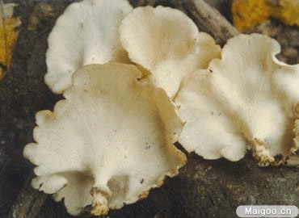
子实体中等至较大，菌盖近圆形，脐状至漏斗状，薄，革质，直径3-15cm，表面光滑，有不明显的细条纹，浅黄白色，干后米黄色，幼时边缘内卷，菌肉白色，较薄，革质。菌褶近白色，稠密，延生，窄，基本上等长，褶缘完整。菌柄粗短，圆柱形，光滑，白色至污白色，长1-2cm，粗0.4-1.7cm，内部实心，其菌柄上有一个较窄的膜质菌环，一般不易脱落。有菌丝柱。
生长在阔叶树倒木上，群生或单生。
分布在我国广东、福建、广西、云南、海南、西藏东南部和西沙群岛，主要分布于热带。
幼嫩时可食用，成长后柔韧不可食。
42、葡萄色顶枝瑚菌
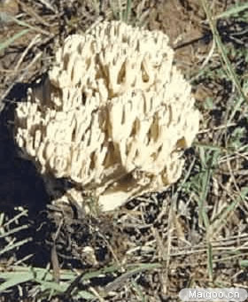
又称葡萄色珊瑚菌、扫帚菌。
子实体珊瑚状，中等至大形，高可达40cm，粗10-30cm，从柄上分出许多主枝，然后再分出较多的叉枝，小枝顶部膨大成叉状，分枝密集，白色带污黄色，枝端桃红色至淡紫色。菌肉白色，质脆，受伤后不变色，子实层生在叉枝表面。
夏秋季生林中地上，散生。
分布于我国吉林、台湾、云南、西藏等地区。
可食用。其质脆嫩，味鲜美可口。可药用，具有和胃气、祛风、破血、缓冲等药用效果。对小白鼠肉瘤180和艾氏癌的抑制率达80%。
43、变绿枝瑚菌
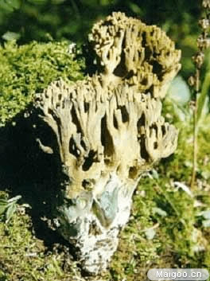
又称绿丛枝菌、变绿丛枝、冷杉枝瑚菌。
子实体多分枝，丛生在一起。灰黄色带黄褐色至肉桂色，高4-10cm，宽达3-4cm，基部有白色绒毛，受伤处及其附近分枝变青绿色，柄短或几乎没有，长1.5-2.5 cm ，粗0.3-0.8 cm ，枝细长，不规则，直立，密集，1-3次分叉，稍内弯，质脆，柔软。
夏秋季在云杉、冷杉等针叶林地腐枝层上群生。
分布于我国吉林、四川、黑龙江、新疆、甘肃、西藏、青海、湖南、广东等地区。
可食用。稍有苦味。
44、翘鳞肉齿菌
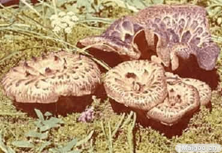
又称獐子菌、仲帽、獐头菌。
子实体中等至大型。菌盖初期突起，后扁平，中部脐状或下凹，有时呈浅漏斗状，浅粉灰色，表面有暗灰色到黑褐色大鳞片，鳞片厚，覆瓦状，趋向中央特别大并翘起，呈同心环状排列，菌盖直径6-10cm。菌肉近白色，菌柄中生或稍偏生，粗 0.7-3cm，有时短粗或较细长，上下等粗或基部膨大，可达4cm，中实、平滑、淡白色，后期变淡褐色。刺锥形，延生，长可达1-1.5cm，初期灰白色。后变浓褐色。
生于高山针叶林中地上，尤以云杉，冷杉林中生长多。
分布于我国甘肃、新疆、四川、云南、青海、西藏等地区，西藏、新疆等高地高寒凉爽的云杉林中较多。
可食用。好吃，新鲜时味道很好，菌肉厚，水份少，不生虫，便于收集加工，但老后或雨多浸湿者带苦味。属外生菌根菌。子实休有降低血中胆固醇的作用，并含有较丰富的多糖类物质。
45、猴头菌
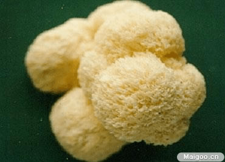
又称猴头蘑、刺猬菌。
子实体中等大、较大或大型，直径5-10cm，或可达30cm，呈扁半球形或头状，有无数肉质软刺生长在狭窄或较短的柄部，刺细长下垂，新鲜时白色，后期浅黄至浅褐色，子实层生刺之周围。
秋季生长多。多生于栎等阔叶树立木或腐木上，少生于倒木。在海拔3000米左右的高原该菌色调加深。
分布于我国河北、山西、内蒙古、黑龙江、吉林、辽宁、河南、广西、甘肃、四川、云南、湖南、西藏等地区。
此菌是是比较重要的野生或栽培食菌，是我国宴席上的名菜。现已比较广泛人工栽培。可利用菌丝体进行深层发酵培养。据分析，每百克（干重）猴头菌子实体含蛋白质26.3克，脂肪4.2克，碳水化物44.9 克，细纤维6.4克，水份10.2克，磷850毫克，铁18毫克，钙2毫克，硫胺素(B1)0.89毫克，核黄素1.89毫克，胡萝卜素0.01毫克，热量323千卡。另有氨基酸16种，其中有7种人体必需的氨基酸。猴头菌子实体还含有多糖和肽类物质，有增强抗体免疫功能。其发酵液对小白鼠肉瘤180有抑制作用。
我国利用菌丝体研制成“猴头片”等中药，对治疗胃部及十二指肠溃疡、慢性萎缩性胃炎，胃癌及食道癌有一定疗效。猴头菌对消化不良、神经虚弱、身体虚弱等均有医疗作用，被视为宜药膳食的食用菌。
46、橙黄革
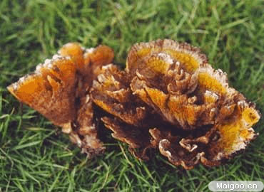
在云南称为黄干巴菌。
子实体中等大。分枝呈宽扇状，向四面伸展，高3-8cm，直径5-9cm，近全缘,少开裂，枝端橙黄色、褐黄色，边缘白黄色，厚，表面粗糙，有瘤状凸起。菌肉淡粉黄色，遇KOH液呈墨绿色。
在云南油杉林及阔叶和针叶混交林地上，群生、丛生或簇生。
分布于云南滇中和滇西等地。
可食用，气味较香，在云南产区群众习惯采集食用。
47、焰耳
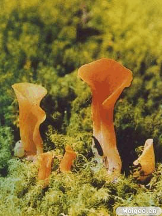
又称胶勺，因呈勺状而得名。
子实体一般较小，胶质，匙形或近漏斗状，柄部半开裂呈管状，高3-8cm，宽2-6cm，浅土红色或橙褐红色，内侧表面覆盖白色粉末，子实层面近平滑，或有皱，或近似网纹状，盖缘卷曲，或后期呈波状，担子倒卵形，纵分裂成四部分，担子部分细长，菌丝长，有锁状联合。
在针叶林或针阔叶混交林中地上单生或群生，有时近丛生。常生长在林地苔藓层或腐木上。
分布于我国广东、广西、云南、福建、四川、浙江、湖南、湖北、江苏、陕西、甘肃、云南、贵州、山西、西藏、青海等地区。
可食用。对小白鼠肉瘤 180和艾氏癌的抑制率分别为70％和80％。
48、金耳
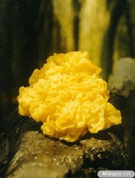
又称黄木耳、茂若色尔布（藏语）。
子实体中等至较大，呈脑状或瓣裂状，基部着生于树木上，8-15cm，宽7-11cm。新鲜时金黄色或橙黄色，干后坚硬，浸泡后可复原状。菌丝有锁状连合。担子圆形至卵圆，纵裂为四，上担子长达125μm，下担子阔约10μm。
夏秋季生于高山栎等阔叶树腐木上，有时也见生长于冷杉倒腐木上，与韧革菌Stereum hirsutum等有寄生或共生关系。
分布于我国西藏、云南、四川、甘肃等地区。
在西藏东南部及其他产区群众有采食习惯。含有甘露糖、葡萄糖及糖。可防癌抗癌。有治肺热、气喘、高血压等作用。现已人工培养。此菌是木腐菌。
49、银耳
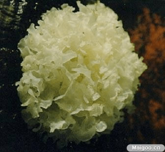
又称白木耳、银耳子。
子实体纸白至乳白色，胶质，半透明，柔软有弹性，由数片至10余片瓣片组成，形似菊花形、牡丹形或绣球形，直径3-15cm干后收缩，角质，硬而脆，白色或米黄色。子实层生瓣片表面。担子近球形或近卵圆形，纵分隔，10-12×9-10μm。
夏秋季生于阔叶树腐木上。目前国内人工栽培使用的树木为椴木、栓皮栎、麻栎、青刚栎、米槠等一百多种。
分布于我国浙江、福建、江苏、江西、安徽、台湾、湖北、海南、湖南、广东、香港、广西、四川、贵州、云南、陕西、甘肃、内蒙古、西藏等地区。
可食用和药用。传统认为银耳具有“补肾、润肺、生津、止咳”之功效，可以治疗肺热咳嗽、肺燥干咳、久咳喉痒，咳痰带血等疾病。
50、木耳
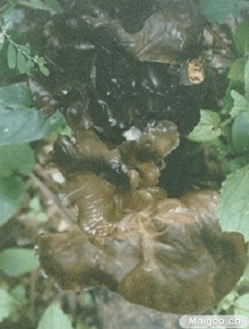
又称黑木耳、耳子、黑菜（黑龙江）。
子实体胶质，浅圆盘形，耳形或不规则形，宽2-12cm，新鲜时软，干后收缩。子实层生里面，光滑或略有皱纹，红褐色或棕褐色，干后变深褐色或黑褐色。外面有短毛，青褐色。生长在栎、榆、杨、榕、洋槐等阔叶树上或朽木及针叶树冷杉上，密集成丛生长，可引起木材腐朽。
分布于我国河北、黑龙江、吉林、辽宁、江苏、福建、台湾、河南、广东、香港、广西、陕西、甘肃、四川、云南、西藏、海南等地区。
可食用，并能人工栽培。为棉麻、毛纺织工人的保健食用。可药用，性平，味甘，补血气，止血活血，有滋润，强壮，通便之功能，可用于治疗痔。对小白鼠肉瘤的180的抑制率42.5-70%,对艾氏癌抑制率80%。
51、毛木耳
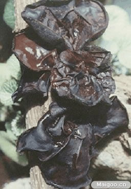
子实体胶质，浅圆盘形、耳形成不规则形，宽2-15μm。有明显基部，无柄，基部稍皱，新鲜时软，干后收缩。子实层生里面，平滑或稍有皱纹，紫灰色，后变黑色。外面有较长绒毛，无色，仅基部褐色，400-1100×4.5-6.5μm。常成束生长。
生长在柳树，洋槐、桑树等多种树干上或腐木上，丛生。
分布于我国河北、山西、内蒙古、黑龙江、江苏、安徽、浙江、江西、福建、台湾、河南、广西、广东、香港、陕西、甘肃、青海、四川、贵州、云南、海南等地区。
可食用，质地脆，味道不如木耳，但别有风味，目前我国已广泛栽培。可药用，其功效与木耳近似。对小白鼠肉瘤180的抑制率为90%，对艾氏癌的抑制率为80%，其绒毛中含丰富多糖，有防癌抗癌作用。毛木耳往往出现在香菇段木上，影响产量，被认为是香菇栽培中的一种有害“杂菌”。
52、长裙竹荪
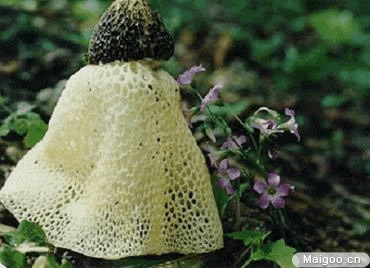
子实体中等至较大，幼时卵球形，后伸长，高12-20cm，菌托白色或淡紫色，直径3-5.5cm，菌盖钟形，高宽3-5cm，有显著网络，具微臭而暗绿色的孢子液，顶端平，有穿孔，菌幕白色，从菌盖下垂达10cm以上，网眼多角形，宽5-10mm。柄白色，中空，壁海绵状，基部粗2-3cm，向上渐细。
夏秋季在竹林或园林地上群生或单生。
分布于我国河北、江苏、四川、台湾、广东、香港、广西、海南、贵州、云南等地。
可食用，但须去掉菌盖和菌托，味鲜可口，此菌煮沸液可防菜肴变质，防肉变腐。可药用，治痢疾。有抗癌作用，对小白鼠肉瘤180的抑制率为60%，对艾氏癌的抑制率为70%。子实体的发酵液对高血压、高胆固醇及腹壁脂肪过厚等有较好的疗效。
53、草地横膜马勃
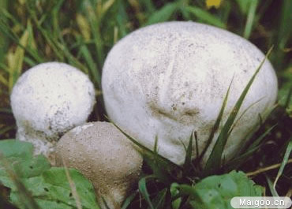
子实体较小，宽陀螺形或近扁球形，直径2-5cm，高1-4cm，初期白色或污白色，成熟后灰褐色或茶褐色。外孢被由白色小疣状短剌组成，后期脱落后，露出光滑的内包被，内部孢粉幼时白色，后呈黄白色，成熟后茶褐灰色或咖啡色。不育基部发达而粗壮，与产孢部分之间有一明显的横膜隔离。孢丝无色或近无色至褐色，厚壁有隔，表面有附属物。成熟后从顶部破裂成孔口，从孔口散发孢子。此种与马勃属的一些种相近似，明显区别是产孢部分与不育部分有一隔膜。
夏秋季在草地、空旷草地、林缘草地上单生、散生或群生。
分布于我国广东、福建、河北、云南、新疆、西藏等。
幼时可食。
54、灰树花
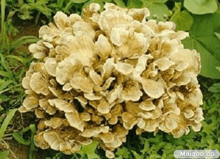
又称莲花菌、舞茸、贝叶多孔菌。
子实体肉质，有柄，多分支，末端生扇形或匙形菌盖，重叠成丛，最宽可达40至60cm。菌盖直径2-7cm，灰色至淡褐色，表面有细的或干后坚硬的毛。老后光滑，有放射状条纹，边缘薄，内卷。菌肉白色，厚。
生于栎树或其他阔叶树木桩周围，造成白色腐朽。
分布于我国河北、吉林、广西、四川等地区
可食用，幼嫩时好吃，味鲜美。可人工栽培或利用菌丝体深层发酵培养，制作饮料等。子实体的水提取物对小白鼠艾氏癌的抑制率为98.1%，对小白鼠肉瘤180的抑制率100%，对艾氏癌的抑制率90%。
蘑菇含有非常丰富的营养，下面是常见的某些食用菌的营养成分分析结果：
几种常见的食用菌的主要营养成分(100克干重中所含克数)
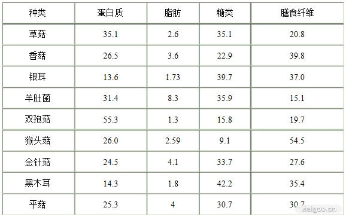
几种常见食用菌的维生素含量(100克干重中含有的毫克数)